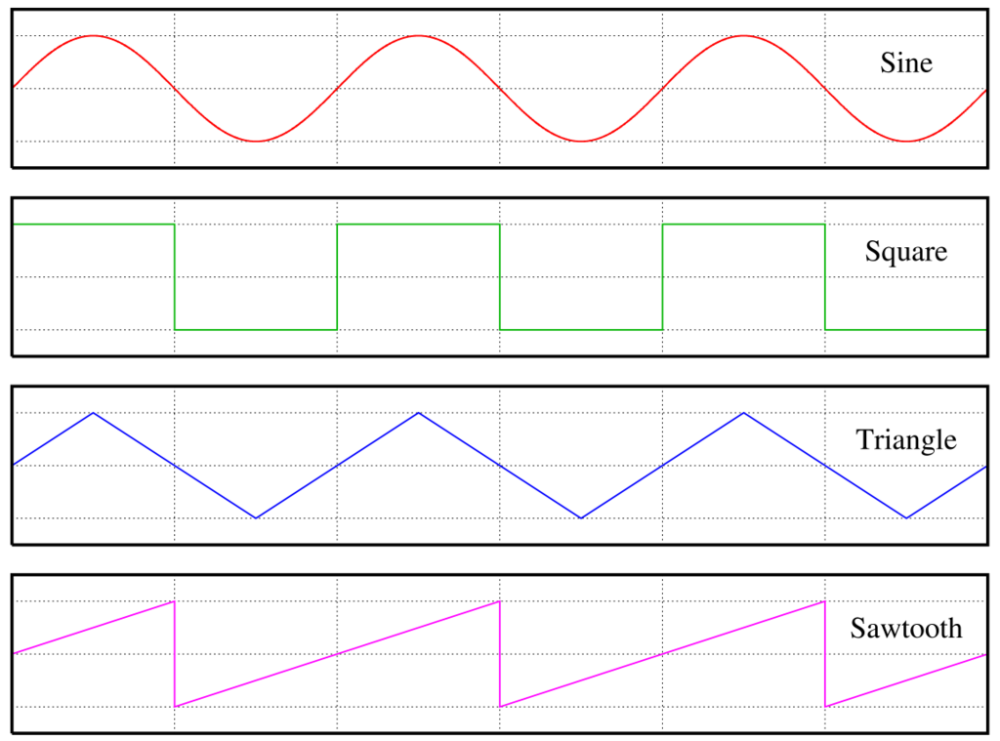
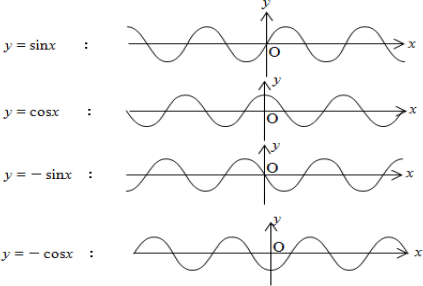
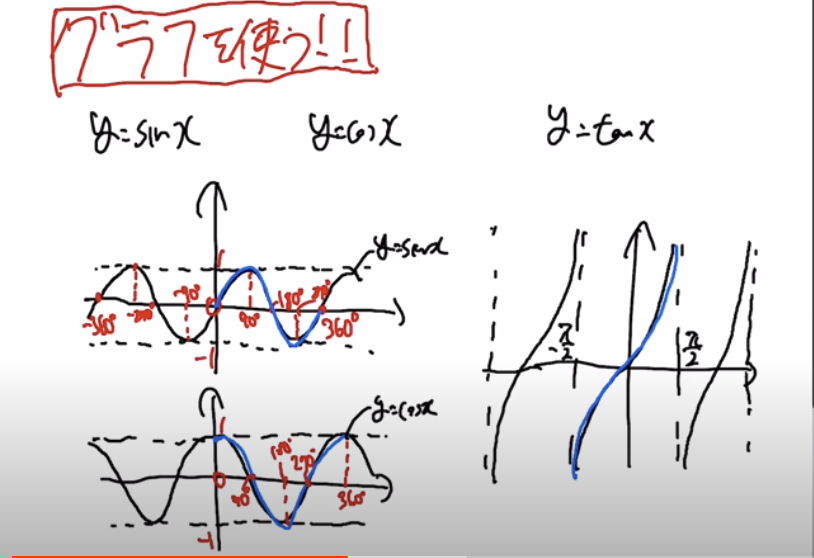
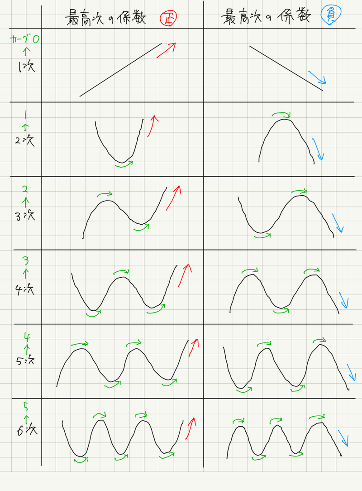
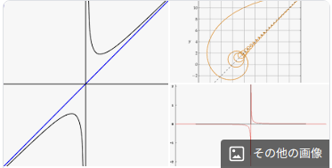
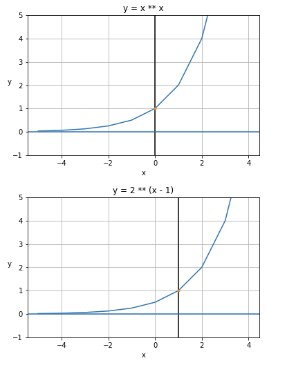
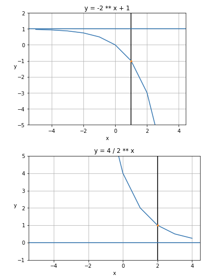

sasano8
| Description | sasano8's portfolio |
| Repository | https://github.com/sasano8/CodingRule |
CodingRule
TIME
RFC3339 ISO8601 W3C-DTF(ISO8601 subset)
UTC(Coordinated Universal Time)
協定世界時とは、国際原子時 (TAI) に由来する原子時系の時刻で、UT1 世界時に同調するべく調整された基準時刻を指す。
UT1
早い話が地球上のどこでも同じ時刻であることを意味する。
場所
iso_3166_1
ISOによって発行された規格の一部であり、国の名前、扶養地域、および地理的に関心のある特別な分野のコードを定義する。
iso_3166_2:JP
ISOの3166-2規格の内、JPで始まるものの一覧であり、日本の都道府県のコードである。
Syslog format
RFC5424 RFC3164
Currency
ISO 4217
- DICOM： CT・MRI・内視鏡・超音波などの医用画像診断装置、医用画像プリンタ、医用画像システム、医療情報システムなどの間でデジタル画像データや関連する診療データを通信したり、保存したりする方法を定めた国際標準規格です。
セキュリティ ↵
- フレームワーク
- [参考]8https://qiita.com/osada/items/c75c34ce716ee4ffba8f)
Windows
サービスアカウント
サービスを作成する場合、以下の例に注意し起動アカウントを選択すること。
Local System
システム領域を扱う場合に利用する。 ローカルコンピュータでのみ有効な権限なため、ネットワーク間の操作は不可。
Network Service
ネットワークに強い？
Administrator
汎用的だが・・・ セキュリティにベストは何だろう。
osint
公開情報を利用した情報収集についての知見をまとめる。
security exploit
https://www.exploit-db.com/google-hacking-database
ハックに有益なgoogleクエリのデータベース
tools
pagefileから調査の手がかりを得る
# pagefile.sysの解析
# 参考
https://soji256.hatenablog.jp/entry/2019/06/25/065200
# ファイルパス
strings pagefile.sys | grep -i "^[a-z]:\\\\" | sort | uniq > list_file.txt
# URL
strings pagefile.sys | egrep "^https?://" | sort | uniq > list_url.txt
# メールアドレス
strings pagefile.sys | egrep '([[:alnum:]_.-]{1,64}+@[[:alnum:]_.-]{2,255}+?\.[[:alpha:].]{2,4})' > list_mail.txt
# 環境変数
strings pagefile.sys | grep -i "^[a-zA-Z09_]*=.*" | sort -u | uniq > list_envirnoment.txt
OutlookのメールをExcelに出力
'UTF8だと動かない場合があるため、その場合はSJISで実行してみてください
' ここをトリプルクリックでスクリプト全体を選択できます。
Const IMPORT_FOLDER = "C:\Users\UserName\Documents" ' EML ファイルがあるフォルダーを指定
'実行の前提として、受信フォルダ配下にインポートフォルダを作成してください
Const TARGET_IMBOX = "インポート"
Const olFolderInbox = 6
Dim olkApp
Dim fldImport
Dim wshShell
Dim objFSO
Dim objFolder
Dim objFile
Set olkApp = CreateObject("Outlook.Application")
Set fldImport = olkApp.Session.GetDefaultFolder(olFolderInbox)
Set fldImport = fldImport.Folders("インポート")
fldImport.Display
Set wshShell = CreateObject("WScript.Shell")
Set objFSO = CreateObject("Scripting.FileSystemObject")
Set objFolder = objFSO.GetFolder(IMPORT_FOLDER)
' IMPORT_FOLDER で指定されたフォルダーのファイルを取得
For Each objFile In objFolder.Files
If LCase(Right(objFile.Name,4)) = ".eml" Then
' 拡張子が .eml ならインポート処理
OpenEml objFile.Name
End If
Next
olkApp.ActiveExplorer.Close
MsgBox "インポートは終了しました。", vbOKOnly, "EML ファイル インポート"
' eml ファイルを開いてインポートするルーチン
Sub OpenEml( strFileName )
On Error Resume Next
Dim objCopied
' メールが開いていたら閉じる
While Not olkApp.ActiveInspector Is Nothing
olkApp.ActiveInspector.Close
WScript.Sleep 1000
Wend
' eml ファイルを Outlook で開くコマンドを実行
wshShell.Run "outlook /eml """ & IMPORT_FOLDER & "\" & strFileName & """"
' 上記のコマンドで Outlook が起動するのを待つ
While olkApp.ActiveInspector Is Nothing
WScript.Sleep 1000
Wend
' 開いたファイルを受信トレイに移動
olkApp.ActiveInspector.CurrentItem.Move fldImport
olkApp.ActiveInspector.Close
End Sub
Ended: セキュリティ
Integration Suite
Python
Pythonを中心に統一したい場合のシステム - 参考
Development TOol
- Visual Studio Code
- Anaconda
- Pycharm
ETL/Job
- Airflow
- Luigi
AI
- Stable Diffusion: 画伯
Business Process Management
- Viewflow
- SpiffWorkflow
Web Framework
- Django
- flask
Documentation
- Sphinx
- readthedocs
- reStructuredText
- MkDocs(おすすめ)
- AsciiDoc
- summary-to-pptx(powerpointを作成)
- CDK(Twitter製。AsciiDocをHTMLスライドに変換)
- SlideShare To PDF
- Pyagram（状態遷移図出力ツール）
- NoTex.ch(オンライネディタ）
- PryNotes
- Booktype(オンライン電子書籍作成ツール)
Scraping/crawler/Enterprise Application Integration
- scrapy(web crawler)
- fscrawler(file system crawler)
- Apache ManifoldCF(file system crawler)
- oneWEX(有償 IBM製 file system crawler）
- PasteHunter(キーワードを設定しモニタする)
- Talend
- DataSpider(有償）
profiler
- Memray : python向けメモリプロファイラ
Infrastracture as a code
- Ansible
Test Tool
- Dogtail(GUI TEST TOOL デスクトップなど操作できるから色々悪さできる？）
Colabolation
- MoinMoin(Wiki Engine)
- Plone(Headless CMS)
- Wagtail(CMS)
- imgpush(画像共有サーバー)
- Photonix(機械学習画像管理)
- zulip(slack風チャット)
- Reminiscence(ブックマークサーバ)
- Waliki(wiki)
- Allura(プロジェクト管理)
- Mezzanine
- Askbot(QAシステム）
- yummy（Deliciousクローン）
Data Analysis
- Pandas
- scikit-learn(機械学習)
- Matplotlib(グラフ生成ライブラリ)
- NumPy(巨大な多次元配列や行列を扱うライブラリ)
- Maltego(ExtensionがPythonに対応)
- Apache Superset(Caravel Airbnb製)
- brat(annotation)
- prodigy(annotation)
- doccano(annotation)
- apache tika(コンテンツの検出と分析)
Other
- Jinja(Template Engine)
- Python Shell(Google Chromeで動作するPython）
- ERP5(ERP)
- graph-cli(CSVを画像化）
- xltrail(VBA差分出力ツール)
- xlwings(ExcelのAPIをPythonで利用する)
- SQLAlchemy(ORM)
外部システム
OCR
- Tegaki
- AIよみとーる
Frontend
grid
- ag-grid
- handsontable
やりたいこと 仮想Iaasの構築
コマンドを実行すると仮想Iaasのコマンドラインモードになる。 infra-init '仮想Iaasの作成 Sqliteのデータベースを作成
infra-builder '仮想Iaasの構築モード(CUI) infra-deploy_web 'Webコンソールを提供するウェブ環境を構築 infra-export_azure infra-export_aws
add-router_template template_name ' add-machine_template template_name ' add-router host_name 'ルータを追加する add-machine host_name 'サーバを追加する add-storage storage_name 'ストレージを追加する add-middle middle_name '管理するミドルを追加する add-security_policy 'セキュリティポリシーを追加する ping host_name 'カレントホストよりピングを実行する expot-data path '設計したデータを書き出す Jsonかな ch 'カレントホストを変更する
コマンドラインモードで実行したコマンドを履歴にとることによって それ自体が手順になる。 エクスポートにより、よりクリーンな手順を出力可能。
仮想的なインフラ空間を構築し、仮想的な構築を行うことができる。
仮想的なネットワークの疎通テストが可能 仮想的なクラスタの構築 仮想的な負荷テスト
Iassの相性を絞る Azure Aws MicorosoftかAmazonに売り込みたい export-xxxでAzureを構築できるようなコマンドを吐
TODO
Azure Awsの機能のインフラ思想の理解
テーブル設計
テーブルは第３正規化以上を行うこと。 ただし、パフォーマンステストを行った上でパフォーマンスに問題がある場合、 正規化を崩してもよい。
カラム定義
必ず主キー、もしくは、複合キーを設定すること。
できる限り、Not Null制約を付与すること。 できる限り、初期値を設定し、 数値は0 文字列は空文字とすること。 ただし、理由がある場合は、順守しなくともよい。
チャート
https://echarts.apache.org/examples/en/ https://observablehq.com/@d3/box-plot
組織図
https://codepen.io/collection/AWxGVb/4/
グラフ
http://js.cytoscape.org/
運用管理画面
viron リンク
OpenAPI 2からフロントエンドを自動生成する。日本製。 もうほぼ活動していない。 OpenAPI 3未対応。
必須APIを実装しなければいけないものの、依存性が少なくてよさそう。
fastapi-admin
tabler(node.js)とopenapiをブリッジする。 tortoise-ormに依存しているのがいい作りではない。
日時に関するデータ
- 1969/12/31、2038/1/20：UNIX系のシステムに有効なデータ。UNIXのシステム時刻は1970/1/1 開始なので、それ以前のデータを打ち込むと予期せぬエラーが発生する可能性がある。また、同様に2038/1/20 も確認するとよい。(参考：UNIX時間 - Wikipedia)
- 0:00～9:00(日本時間(JST))：日本と世界の間で発生する日付の歪。日本時間は、システムが標準で用いている協定世界時(UTC)から9時間進めた時刻となっている。そのため、日付の切り替わるタイミングが、日本時間と協定世界時で9時間のズレが生じる。(参考：協定世界時 - Wikipedia)
文字列に関するデータ
- 𩸽(ほっけ)：サロゲートペア文字と呼ばれる文字列。日本語の漢字を頑張ってサポートしちゃった結果生まれた変なやつ。文字数をカウントを崩してきたり、そもそも文字列としてちゃんと表示されなかったりと、何かと問題を起こす優秀なデータ。(参考：サロゲートペア入門：CodeZine（コードジン）)
- 表示：Shift-JIS におけるダメ文字(正確には"表"がダメなやつ)。他にも"ー"などがいる。食わせると別文字として取り扱ってしまう場合がある。(参考：Shift_JISのダメ文字 - fudist)
特定ドメインに大して有効なデータ
- 498-0000：愛媛愛知県と三重県に存在する重複した郵便番号(他にもいくつかある)。郵便番号を自動入力してくれるシステムが増えてきているので、テストするときは必ず入れてあげよう。(参考：郵便番号や市区町村データを取り扱うときにはまったこと - Qiita)
プログラム言語 ↵
ヘッダ
各ソースファイルの先頭とプロシージャ・ファンクションの上部にヘッダを用意すること。
ソースヘッダ
'ソース名 ：
'機能説明 ：
'備考 ：
'作成者 ：2016/12/11
'作成日 ：2016/12/11
ファンクションヘッダ
'機能名 ：
'引数 ：
'戻り値 ：Arg1
' ：Arg2'
機能説明 ：
'備考 ：
'作成者 ：2016/12/11
'作成日 ：2016/12/11
型宣言の強制
下記の宣言を行い型の宣言を強制すること。
Option Explicit
この宣言は以下の設定で自動挿入を行う。
- 【ツール】→【オプション】
- 【編集】のタブを選択
- 【変数の宣言を強制する】をチェックする。
理由
変数名のミスがあった場合、コンパイル時にミスを検知することができるため。
変数の一括宣言
一行で複数の変数宣言を行う場合、それぞれに型を明示すること。
Dim valA as String, valB as Long
理由
型宣言を行わないと、暗黙の型（Variant）が適用されるため。
Dim UserMin, UserMax As Integer 'userMinはVariant型になる。
マクロのスコープ
以下の宣言を利用し、プロシージャ・ファンクションの不要なアクセスレベルを付与しないこと。
Option Private Module
変数のスコープ
オブジェクトの初期化
以下の正しい例に従い、オブジェクトの初期化を行うこと。
'正しい例
Dim obj As MyClass
Set obj = New MyClass
'誤った例
Dim obj As New MyClass
理由
オブジェクトの変数宣言と同時に初期化を行うと、コンストラクタの起動タイミングが制御できないため。
オブジェクトの破棄
使用が終わったオブジェクトは参照を解放すること。 クローズメソッドを持っているオブジェクトはクローズを実施すること。
Call obj.Close
Set obj = Nothing
また、クラスモジュールを作成時にデストラクタを定義すること。
Sub Class_Terminate()
'処理
End Sub
理由
オブジェクトは参照カウンタを持っており、参照が0になるとオブジェクトが破棄されるため。 オブジェクトはスコープを抜けると破棄されるが（確認）、 リソース未解放のリスクを軽減するため、明示的に破棄を行うこと。
環境依存
参照設定とCreateObjectは動作環境により正常に動作しない可能性があるため、 動作させる可能性がある環境で検証を行うこと。
命名規則
意味を略さずに略さずに命名すること。
クラス名・標準モジュール名
Pascal Case(Upper Camel Case)を利用すること。
MyClass
定数
Upper Case を利用すること。 定数名に型や利用用途について情報を含めること。
Const RNG_INPUT_USERNAME 'ユーザー名の入力セル
変数
Snake Case を利用すること。
Dim ws_test as WorkSheet
理由
VBAは構造化が複雑であり、きちんと分類分けすることが難しい。 様々な観点が入り乱れる為、_で意味を理解できるように努める。
備考
カウンタなどスコープの狭い変数は「i」「j」などを利用してもよい。 ただし、ネストが3階層以上になるときは、名前に意味を持たせること。
日本語名について
業務用件に従った日本語を利用してもよい。 ただし、利用・開発拠点が日本国外である場合は、使用しないこと。
理由
用語の乱立を防ぐことができる。 日本国外においては、外国人技術者や動作に支障をきたす可能性がある。
コントロール名
コンポーネントの種類に応じて、プレフィックスを用いること。
コールバック
VABでコールバックを利用する場合はCallByNameを利用し、 コールバック対象のオブジェクトは「OnCompleted」を実装すること。 同一クラス・フォームで２つ以上のコールバック関数が必要な場合は、 「OnCompleted + 処理名」とすること。
Sub Procedure(callback as Object)
CallByName callback, "OnCompleted", VbMethod, "おはよー", "おはよー"
End Sub
コメント
配列
ショートサーキット
VBAにおいて、ショートサッキット（短絡評価）は行われないということを認識すること。
'IsAの判定がfalseでもIsBが実行される。
if IsA() = "A" And IsB() = "B" then
end if
3項演算子
VBAの構文に、三項演算子は存在しないが、IIF関数を利用することができる。 ただし、true falseどちらの評価も行われるため、 イミュータブルな値を利用すること。
'正しい例
result = IIF(IsTrue(),True,False)
'誤った例
Call IIF(IsTrue(),DoIfTrue(),DoIfFalse()) 'どちらも実行されてしまう。
日付リテラル
地域により動作が異なるため、日付リテラルを利用すること。
Dim birthday as Data
'正しい例
birthday = #12/1/1 12:0:0#
Debug.Print birthday '日本 2012/1/1 12:00 米国 2001/1/12 12:00
'誤った例
birthday = "12/1/1 12:0:0"
Debug.Print birthday '
理由
日付リテラルを利用することで、日付の解釈を固定できるため。
型宣言文字
変数や値の末尾にキーワードを付与することで、型を指定することができる。 基本は、変数で型を定義すること。
Dim a$ '文字列型
Dim b& '長整数型
Dim c% '整数型
Dim d@ '通貨型
Dim e# '倍精度浮動小数点数型
Dim f! '単精度浮動小数点数型
'または以下のように利用する。
a = 0
a = a$
b = 0&
c = 0%
d = 0@
e = 0#
f = 0!
引数のキーワードの明示化
参照渡しか値渡しか明示すること。
理由
関数の呼び出し方により、値渡し、参照渡しが決定されるため。
Dim lVal as long
SubA lVal '参照渡しになる
SubA(lVal) '値渡しになる
Call SubA(lVal) '参照渡しになる
Call SubA((lVal)) '値渡しになる
設計
モジュール・クラスにまとめる関数の設計は以下を参考とすること。
エラーハンドリング
VBAにおいて、例外処理はプロシージャ内にエラー処理用のサブルーチンを書く必要がある。 処理によって、適切なエラーハンドリングを行うこと。
ループ中のエラーハンドリング例
サブルーチンからメインルーチンへ戻るには、Resumeステートメントを利用する。
'正しい例（本当か？）
On Error Goto err_handler
for i = 0 to 100
'処理
next_loop:
next
resume next_loop
'誤った例（例外発生後は例外を検知できない。）
On Error Goto err_handler
for i = 0 to 100
'処理
err_handler:
next
長いメインルーチンでのエラーハンドリング例
処理
OnSccess
'成功処理
goto OnComplete
OnError
'失敗処理
goto OnComplete
OnComplete
'クローズ処理
exit function
繰り返し中のエラーハンドリング例
Function ErrHandlingSample()
On Error Goto err_handler
for each r in Selection
Call Function01()
Call Function02()
Call Function03()
next_loop:
next
On Error Goto 0
'無限ループ回避(resumeが無限に走ってしまう。)
Exit Function
'エラーが発生したら、next_loopへ復帰する
err_handler:
resume next_loop
End Function
Empty値について
Emptyとは何も値が設定されていない状態であり、 Variant型でのみ有効？である。
Emptyを厳密に区別するためには以下のようなコードで理解を深めるとよい
Dim a as Variant
Dim b as Variant
b = 0
'何も値を設定していない状態はIsEmptyでTrueが返る
if a = 0 then debug.print "Not Empty"
if a = Empty then debug.print "Not Empty"
if IsEmpty(a) then debug.print "Empty"
'何か値を設定していればIsEmptyでFalseが返る
if b = 0 then debug.print "Not Empty"
if b = Empty then debug.print "Not Empty"
if IsEmpty(b) then debug.print "Empty"
行番号
VBA（正式にはVisual Basic?）では、行に番号を付与することができる。 以下のコードは、その機能を利用したテストの例である。
Sub Test()
On Error Goto TestFailed
1 If Sheet1.Range("A1").Value <> "" then Err.Raise -1
2 If Sheet1.Range("B1").Value <> "" then Err.Raise -1
On Error Goto 0
Exit Sub
TestFailed:
Debug.Print "ERR NO : " & VBA.Erl
Resume Next
End Sub
文字列データの比較モードの指定
比較モードにより、文字列の比較結果が変わる。 既定はBinaryとなる。
Option Compare Binary
Sub Sample()
Debug.Print "A" < "a" 'Trueが返ります。
Debug.Print "A" < "a" 'Falseが返ります。
End Sub
Option Compare Text
Sub Sample()
Debug.Print "A" < "a" 'Falseが返ります。
Debug.Print "A" < "a" 'Trueが返ります。
End Sub
'Accessのみで利用可能
Option Compare Database
ActiveXとフォーム
ワークシート上に配置するボタンなどのコントロールは、ActiveXとフォームの２種類が存在している。 おすすめはフォーム。 ActiveXは経験上壊れやすかった。 しかし、ActiveXを利用すると、コードでコンポーネントを管理できた気がする。 （検証要）
エラーメッセージ管理（考察中）
ユーザ独自のエラー番号を定義する場合、 エラー番号0～512はシステムで予約されている為、それ以降を利用すること。
Public Const MSG_SUCCESS = 0
Public Const MSG_FATAL = 513
Public Const MSG_NOTFOUND = 514
辞書の合成
２つの辞書を合成した場合、重複したキーはどうなるか検証した。 dict(*dic1, *dic2)、func(*dic1, *dic2)は重複したキーが投入された時、エラーとなるので積極的に使ってよい。 {*dic1, *dic2}は、後勝ちで上書きされるので危険。
dic1 = {"name": "bob", "age": 20}
dic2 = {"name": "mary"}
# 辞書作成時
{**dic1, **dic2} # => {"name": "mary", "age": 20} 右辺の値で上書き
dict(**dic1, **dic2) # => TypeError: func() got multiple values for keyword argument 'name'
# update / 代入演算子
update_dic = {"name": "bob", "age": 20}
update_dic.update(dic2)
# または
update_dic |= dic2
# => {"name": "mary", "age": 20} 右辺の値で上書きされる。また、元データを変更するので、できればあまり使わないほうがよい。
dict(update_dic, **dic2)
# 元のソース自体は更新されない
# => {"name": "mary", "age": 20}
# マージ演算子
new_dic = dict_1 | dict_2
# => {"name": "mary", "age": 20} 右辺の値で上書きされる
# キーワード引数として渡す際に合成
def func(**kwargs):
print(kwargs)
func(**dic1, **dic2)
# => TypeError: func() got multiple values for keyword argument 'name'
クラス
python3.7未満は、クラスコンストラクタの定義が冗長的。 python3.7以降は、dataclassデコレータでメンバ変数およびに__init__や__str__を自動生成してくれる。 pydanticはdataclassのような機能に加え、様々なオプションを設定でき高機能。 ライブラリ作成時は、依存関係を減らすためdataclassを使いたい。
class MyClass:
def __init__(self, name):
self.name = name
# python3.7以降
from dataclasses import dataclass
@dataclass
class MyClass:
name: str
# 外部ライブラリ
from pydantic import BaseModel
class MyClass(BaseModel):
name: str
日付の扱い方
日付関連の機能はdatetimeモジュールから利用することができる。 タイムゾーンを操作するには、標準ライブラリだけでは大変で、python-dateutil,pytzなどの外部ライブラリを用いるのがスタンダード。 python3.9からは、zoneinfoが標準ライブラリに加わり、タイムゾーンを扱いやすくなった。
日付はawareな日付とnativeな日付が存在する。 awareな日付は、timezone（現地時間）情報を持つため、地域が異なる日付同士で比較することができる。 nativeな日付は、timezoneを持たないため、暗黙的に同一の地域とみなせる狭いスコープでのみ利用される。 常に、awareな日付を作成することで、nativeを考慮しない方が明瞭に課題を解決できる。
とにかく、datetimeオブジェクトを作成時は,utcを指定しておくのがよい。 現地時間を重視する場合は、timezoneを指定しておき、表示の際にどの地域を軸に表示するか指定する。
日付関連型
import datetime
import time
dt = datetime.datetime.now() # datetime型 日付＋時間
da = datetime.date.today() # date型 日付のみ date型はdatetime型と互換性がある
td = datetime.timedelta(days=1) # timedelta型 日数、秒数、マイクロ秒数情報を持ち、差分表現に用いられる
ut = time.time() # float型 UNIX時間（エポック秒）
# 単純に日付を作成しただけではawareな日付にならない
dt = datetime.datetime.now()
dt.tzinfo
# =>> None
dt = datetime.datetime.utcnow()
dt.tzinfo
# =>> None
# 面倒だが常にタイムゾーンを意識する
dt = datetime.datetime.now(tz=datetime.timezone.utc)
dt.tzinfo
# =>> datetime.timezone.utc
# OSの現在日時が2020年11月17日23時の場合の結果は以下のようになる
dt.isoformat()
# =>> '2020-11-17T14:01:54.567154+00:00'
# python3.9からはこう書けるようになる？？
dt = datetime.datetime.now(tz="utc")
# いけないコード。Asia/Tokyoで19分ずれる
datetime(1970, 1, 1, 0, 0, 0, 0, tzinfo=pytz.timezone('Asia/Tokyo'))
# => datetime.datetime(1970, 1, 1, 0, 0, 0, 0, tzinfo=<DstTzInfo 'Asia/Tokyo' LMT+9:19:00 STD>)
# 好ましいコード。
tz = pytz.timezone('Asia/Tokyo')
tz.localize(datetime(1970, 1, 1, 0, 0, 0, 0))
# => datetime.datetime(1970, 1, 1, 0, 0, 0, 0, tzinfo=<DstTzInfo 'Asia/Tokyo' LMT+9:00:00 STD>)
型チェック
# typeは、完全一致での型チェックを行う場合に利用する。
# isinstanceは、親オブジェクトを含んだ型チェックを行う場合に利用する。
# クラスはタイプのインスタンス
class SampleBase():
pass
class Sample(SampleBase):
def __call__(self):
pass
def func():
pass
obj = Sample()
type(obj) is Sample # True
type(obj) is SampleBase # False
isinstance(obj, Sample) # True
isinstance(obj, SampleBase) # True
isinstance(Sample, type) # True
issublass(Sample, SampleBase) # True
issublass(Sample, type) # False
# クラスはtypeのインスタンスである
isinstance(SampleBase, type) # True
isinstance(Sample, type) # True
# インスタンスはobjectである
isinstance(obj, object) # True
isinstance(Sample, object) # True
isinstance(obj, type) # False
# callableチェック
objbase = SampleBase()
callable(objbase) # False
callable(obj) # True
callable(func) # True
# asyncチェック
def func_async():
pass
asyncio.iscoroutinefunction(func) # False
asyncio.iscoroutinefunction(func_async) # True
デコレータ
関数やcallableなオブジェクトはデコレータとして呼び出すことができる。
デコレータの種類
デコレータが呼び出されるシチュエーションはいくつか考えられ、完全なデコレータを実装するにはそれぞれシチュエーションに応じた実装が必要。
# 1. 引数なしデコレータ
@deco
def myfunc():
pass
# 2. 引数なしラッパー関数経由デコレータ
@deco()
def myfunc():
pass
# 3. 引数ありラッパー関数経由デコレータ
@deco(name="test")
def myfunc():
pass
# 4. 1〜3全対応
全対応に対応すると、引数に意図しない対象がセットされてしまう恐れがあり、また、その意図の判定は困難なため、
引数あり、引数なしを限定させた方がよい。
実装例
# デコレータをクラスで実装
class function_decorator():
def __call__(self, *args, **kwargs):
is_func_only = (len(args) == 1) and callable(args[0])
# 引数付きデコレータ処理
if not is_func_only:
self.args = args
self.kwargs = kwargs
def wrapped(*args, **kwargs):
return self.__call__(*args, **kwargs)
return wrapped
# 括弧省略時 or 引数付きデコレータ処理後（最終処理）
else:
if not hasattr(self, "args"):
self.args = ()
if not hasattr(self, "kwargs"):
self.kwargs = {}
func = args[0]
self.valid_args(*self.args, **self.kwargs)
self.on_wrapped(func)
result = self.return_object(func)
return result
def valid_args(self, *args, **kwargs):
pass
def on_wrapped(self, func):
print("initializing...")
print(self.args)
print(self.kwargs)
print("initialized.")
def return_object(self, func):
return wraps(func)(partial(self.wrapper, func))
def wrapper(self, func, *args, **kwargs):
print(args)
print(kwargs)
return func(*args, **kwargs)
deco = function_decorator()
@deco(tag="test")
def message(msg):
print(msg)
message("hello")
Linq
データ構造
リスト、タプル、ディクショナリ、セット
arr = [1, 2, 3] # インデックスによるアクセスが可能
tup = (1, 2, 3) # インデックスによるアクセスが可能 インスタンス作成後の値変更は許可されない
set = {1, 1, 2, 3} # インデックスによるアクセスが可能 重複は排除される
dic = {"name": "test", "age": 20} # キーによるアクセスが可能
その他
あまり知られていないpythonの仕様を紹介する。 紹介する仕様は、バージョンによっては利用できない。（主に、Python3.4以降の仕様を紹介）
複素数
c1 = 1 + 1j
c2 = 1 - 2j
c1 + c2 # -> 2 - j
ステップフィルター
arr = list(range(20))
arr[::2] # -> [0, 2, 4, ...]
Ellipsis
dummy用のオブジェクトを作成する
... # -> Ellipsis
bool(...)
unpack argument
関数に引数を渡すとき、リストや辞書を引数に当てはめて呼び出したいときがある。 そのようなケースで、配列や辞書を位置限定引数として（*）、または、キーワード引数として（**）展開することができる。
def print_profile(name, age):
print(f"{name} {age}")
arr = ["test", 20]
dic = {
"name": "test",
"age": 20
}
print_profile(*arr)
print_profile(**data)
位置限定引数 / キーワード限定引数
引数は、位置引数とキーワード引数に都合よく解釈されるが、位置限定引数(/の前)、キーワード限定引数(*の後)として解釈を限定することができる。 位置限定引数は、python3.8から利用可能。
位置限定引数はあまり使い道がないが、キーワード限定引数はコーディングを明示的にするため積極的に活用すべき。
def example(pos_only, /, standard, *, kwd_only):
print(pos_only, standard, kwd_only)
global
どのスコープからでもグローバル変数を定義、参照することができる
def func():
global a
a = 1
nonlocal
ひとつ外側のスコープに属する変数へアクセスができる
def func():
count = 0
def func_inner():
nonlocal count
yield from
他のイテレータから値を返すジェネレータを作成する
def func():
yield from range(5)
def func():
yield from () # 空のイテレータ
raise from
例外を連鎖させる際に、送出元の例外を保持する
try:
raise Exception("e1") from Exception("e2")
except Exception as e:
print(e.__cause__) # e2
async await
import asyncio
thisのスコープ
thisのスコープは以下の種類がある。 - メソッド呼び出しパターン - 関数呼び出しパターン - コンストラクタ呼び出しパターン - apply,call呼び出しパターン
また、注意点として、function宣言時にfunction構文とアロー演算子によって、thisのスコープが異なる。 function構文の場合は、宣言時のオブジェクトのthisを参照するが、アロー演算子による定義はグローバルthisを参照する。
this.data = "test"
var f1 = {
data: 'this1',
do: function() {
console.log(this.data)
}
}
var f2 = {
data: 'this2',
do: () => {
console.log(this.data)
}
}
コストラクタ
JavaScriptにはクラスの概念がない。 しかし、new演算子でクラスのようなオブジェクトを実現することができる。
function Dog(name, cry){
//this = {}
this.name = name;
this.bark = function() {
console.log(cry);
};
//return this;
}
//newは暗黙的に、thisにオブジェクトを格納し、それをリターンします。
var dog = new Dog('poti','bow');
dog.bark();
SQL
/*
SQL TRANING.
*/
/*
----------------------------
WITH句 について
----------------------------
SQLSERVERなどで利用可能な構文。
CTE(Common Table Expression:共通テーブル SQL99規格）と呼ばれ、再帰などに利用する。
ノードを辿るのに用いられる
*/
-- DECLARE @NODES TABLE(Id int, Location VARCHAR(10), Parent VARCHAR(10));
-- prefixを#とすると、一時テーブルとなる。##でグローバル一時テーブルになる
-- テーブルはセッション終了時に削除される。
DROP TABLE IF EXISTS #NODES;
CREATE TABLE #NODES(
Id int,
Location VARCHAR(10),
Parent VARCHAR(10)
);
INSERT INTO #NODES
select 1 as Id, 'Universe' as Location, '' as Parent
union all select 2 as Id, 'Mars' as Location, 'Universe' as Parent
union all select 3 as Id, 'Earth' as Location, 'Universe' as Parent
union all select 4 as Id, 'America' as Location, 'Earth' as Parent
union all select 5 as Id, 'Japan' as Location, 'Earth' as Parent
union all select 6 as Id, 'Tokyo' as Location, 'Japan' as Parent
union all select 7 as Id, 'Osaka' as Location, 'Japan' as Parent
;
SELECT * FROM #NODES;
DECLARE @Tagert Varchar(10);
SET @Tagert = 'Japan';
WITH LOOP_TABLE AS (
SELECT * FROM #NODES WHERE #NODES.Location = @Tagert
UNION ALL
SELECT #NODES.* FROM LOOP_TABLE, #NODES
WHERE LOOP_TABLE.Parent = #NODES.Location -- 親の定義を階層定義から取得 取得分が次のループとなる
)
SELECT * FROM LOOP_TABLE;
/*
----------------------------
UNION について
----------------------------
union は足し算と考えればよい
*/
-- 重複を許す
select 1,'test1' union all
select 1,'test1' union all
select 3,'test3'
-- 重複を許さない 重複チェックがある分、速度が遅い
select 1,'test1' union
select 1,'test1' union
select 3,'test3'
/*
----------------------------
OVER句 について
----------------------------
集約関数をOVER句とともに利用することで、
移動平均、累積集計、集計途中経過などを算出することができる。
*/
DECLARE @T1 TABLE(Center VARCHAR(10), Period VARCHAR(2),Val int);
INSERT INTO @T1
select 'C01' as Center, '01' as Period, 1 as Val
union all select 'C01' as Center, '02' as Period, 1 as Val
union all select 'C01' as Center, '03' as Period, 1 as Val
union all select 'C01' as Center, '04' as Period, 1 as Val
union all select 'C01' as Center, '05' as Period, 1 as Val
union all select 'C01' as Center, '06' as Period, 1 as Val
union all select 'C01' as Center, '07' as Period, 1 as Val
union all select 'C01' as Center, '08' as Period, 1 as Val
union all select 'C01' as Center, '09' as Period, 1 as Val
union all select 'C01' as Center, '10' as Period, 1 as Val
union all select 'C01' as Center, '11' as Period, 1 as Val
union all select 'C01' as Center, '12' as Period, 1 as Val
union all select 'C02' as Center, '01' as Period, 1 as Val
union all select 'C02' as Center, '02' as Period, 1 as Val
union all select 'C02' as Center, '03' as Period, 1 as Val
union all select 'C02' as Center, '04' as Period, 1 as Val
union all select 'C02' as Center, '05' as Period, 1 as Val
union all select 'C02' as Center, '06' as Period, 1 as Val
union all select 'C02' as Center, '07' as Period, 1 as Val
union all select 'C02' as Center, '08' as Period, 1 as Val
union all select 'C02' as Center, '09' as Period, 1 as Val
union all select 'C02' as Center, '10' as Period, 1 as Val
union all select 'C02' as Center, '11' as Period, 1 as Val
union all select 'C02' as Center, '12' as Period, 1 as Val;
-- Center毎の毎月の計上値を累計表示にする
INSERT INTO @T2
select Center, SUM(Val) OVER(Partition by Center order by Period) FROM @T1;
select * FROM @T2;
/*
----------------------------
累積値を単月値に戻す
----------------------------
LAG（対象列、何行前を取得するか、Nullの場合の値）を利用して、累積値を単月値に戻す。
*/
Select Center, Period, Val - LAG(Val,1,0) OVER(Partition by Center order by Period ASC) FROM @T2;
/*
----------------------------
Pivotについて
----------------------------
行を列に変換する。
*/
DECLARE @T4 TABLE(ID int, Country VARCHAR(10), Product VARCHAR(10),AMOUNT int);
INSERT INTO @T4
select 1 as ID, 'Japan' as Country, 'TV' as Product, 100 as AMOUNT
union all select 2 as ID, 'Japan' as Country, 'Phone' as Product, 200 as AMOUNT
union all select 3 as ID, 'America' as Country, 'TV' as Product, 300 as AMOUNT
union all select 4 as ID, 'America' as Country, 'Phone' as Product, 400 as AMOUNT
union all select 5 as ID, 'Jamaica' as Country, 'TV' as Product, 500 as AMOUNT
;
SELECT * FROM @T4;
select * FROM @T4
PIVOT(
SUM(AMOUNT) FOR Product IN(TV,Phone)
) AS PV;
/*
----------------------------
UnPivotについて
----------------------------
列を行に変換する。
*/
DECLARE @T5 TABLE(TV VARCHAR(10), Phone VARCHAR(10));
INSERT INTO @T5
select 100, 200 as Amount
union all select 200, 300 as Amount
union all select 400, 500 as Amount
union all select null, 300 as Amount
union all select 200, null as Amount
union all select null, null as Amount
;
SELECT * FROM @T5;
SELECT Product,Amount FROM @T5
UNPIVOT(
Amount FOR Product IN (TV,Phone)
) AS UP;
-- カタログビューとは？
-- Pivot,Unpivotは値が変わると動的に取得することができない。
-- そのため、工夫が必要。https://www.casleyconsulting.co.jp/blog/engineer/162/
/*
----------------------------
動的SQL
----------------------------
*/
exec sp_executesql "select 1";
-- exec sp_executesql 'select 1'; -- 実行不可
/*
----------------------------
カーソル操作
----------------------------
*/
-- カーソル定義
DECLARE CUR_TABLES CURSOR FOR
SELECT sys.tables.object_id,sys.tables.name
FROM sys.tables
INNER JOIN sys.objects
ON sys.tables.object_id = sys.objects.object_id
;
DECLARE @CUR_T TABLE(object_id VARCHAR(100),table_name VARCHAR(100),ODD VARCHAR(100));
DECLARE @object_id VARCHAR(100);
DECLARE @table_name VARCHAR(100);
-- カーソルオープン
OPEN CUR_TABLES;
-- データを格納
FETCH NEXT FROM CUR_TABLES
INTO @object_id,@table_name
;
-- カーソルのデータが終わるまで繰り返す（この実装はややださい。WHILE 1 = 1 で無限ループさせ、FETCH_STATUSを中で確認し、FETCH文を一か所にしか登場させない実装もある。）
WHILE @@FETCH_STATUS = 0
BEGIN
-- IFの構文はBEGIN - ENDを定義するが、省略可能
IF (@object_id % 15) = 0
-- BEGIN
INSERT INTO @CUR_T VALUES(@object_id,@table_name,'fizzbuzz')
-- END
ELSE IF (@object_id % 3) = 0
-- BEGIN
INSERT INTO @CUR_T VALUES(@object_id,@table_name,'fizz')
-- END
ELSE IF (@object_id % 5) = 0
-- BEGIN
INSERT INTO @CUR_T VALUES(@object_id,@table_name,'buzz')
-- END
ELSE
-- BEGIN
INSERT INTO @CUR_T VALUES(@object_id,@table_name,'')
-- END
FETCH NEXT FROM CUR_TABLES
INTO @object_id,@table_name
END
-- カーソルクローズ
CLOSE CUR_TABLES;
-- メモリを解放する
DEALLOCATE CUR_TABLES;
-- 結果の確認
SELECT * FROM @CUR_T;
Parsing
構文解析
構文解析とは、マークアップなどの注記の入っていないベタの文字列を、自然言語であれば形態素に切分け、 さらにその間の関連（修飾-被修飾など）といったような、統語論的（構文論的）な関係を図式化するなどして明確にする（解析する）手続きである。
言語学の構成
- syntax: 文の構造
- semantics: 文の意味
- pragmatics: 文脈における文の意味
- morphology: 語の構造
- phonology: 言葉の発音
キーパーソン
- チョムスキー
- 中田育男
参考書
構文解析における定番の参考書を紹介する。
なお、コンパイラやインタプリタの一部となるパーザ（構文解析器）については、非常に文献が少ない。
ツール
- Python lark: ebnfからパーサを構築する
- C言語 lex
- C言語 yacc: yacc文法 + BNFからパーサを構築する
自然言語
言語学や論理学、計算機科学の専門用語で、「英語」・「中国語」・「日本語」といった「○○語」の総称。つまり普通の「言語」のこと。 対義語は「人工言語」「形式言語」、すなわちプログラミング言語や論理式など。
形式言語
その文法（構文、統語論）が、場合によっては意味（意味論）も、形式的に与えられている（形式体系を参照）言語である。 プログラム言語など、厳格性が必要な言語は形式言語である。
形式言語における文法分類
文脈自由文法（CFG・context free grammar）
形式言語の理論（特に、生成文法）において全生成規則が以下のようである形式文法である。 「文脈自由」という用語は前後関係に依存せずに非終端記号を終端記号と非終端記号の（0個を含む）任意個の並びに置換できる。
プッシュダウンオートマトン
LL(k) 文法
自然言語の処理工程
- 形態素解析
- 構文解析
- 意味解析
- 文脈解析
形式言語の処理工程
字句解析
意味解析
プログラムが意味的に誤りを犯していないかということを検査する。 例えば、重複して変数や識別子を宣言していないか、といった、構文的には何ら誤りはないが意味的には誤りということを検知するのに大きな役割を果たす。
アルゴリズム
- 再帰的下方（トップダウン）構文解析法
- 上方（ボトムアップ）構文解析法
- LL family: 下向き構文解析 トップダウンのこと？
- LR family: 上向き構文解析 ボトムアップのこと？
- GLL
- PEG(Packrat Parsing)
- 演算子優先順位法
- LL法
- LL(1)
- LL(k)
- LL(*)
- ALL(*)
- LR
- SLR
- LALR
- LR(0)
- LR(1)
- LR(k)
- Generalized Parsing
- Generalized LL
- Generalized LR
- PEG
- Packrat Parsing
Earley
JayEarleyによって発案。
- 文脈自由文法（CFG）のサポート
- あいまいな文法のサポート
LALR
LALRを使用するときは、パーサーでの衝突の可能性を減らすために、できるだけ多くの作業をレクサーに渡す必要があります。
曖昧な文法（ambiguous grammars）
構文木が唯一にならないかもしれない文法のことである。
Parser Generator
構文解析器を構築するツール。 一般的には、BNFから構文解析器を生成する。
Parser Combinator
Parser Generatorの一種で、無数のパーサを組み合わせて複雑なパーサを構築する。 単体テストがしやすく、再利用性が高い。
高階関数を多用するため、汎用性・応用力が高い反面、そのような手法を用いないParser Generatorより速度が劣るデメリットがある。
Parser
字句解析器とシンタックスアナライザ（構文解析）の２つで構成される。
手続き
字句解析（lexer）
構文解析器に文字列を入力するとトークンに分割する。scannerとも呼ばれる。
意味解析
aaa
- identifier
- symbol
決定性有限オートマトン（DFA）
非決定性有限オートマトン（NFA）
有限オートマトンの一種であり、ある状態と入力があったとき、次の遷移先が一意に決定しないことがあるものである。
Ended: プログラム言語
要件定義 ↵
背景
ゴール
スケジュール
ステークホルダー
本プロジェクトは、学習プロジェクトのため、下記の仮想の人物を想定することとする。
中立的な立場になり、調整者（自分自身）は特定の意見に賛同したり、自分の意見を主張しないこと。
-
直接ステークホルダー
- 〇〇事業部の〇〇さん
-
間接ステークホルダー
- 〇〇株式会社
- 〇〇事業部
- 〇〇株式会社
開発スタイル
- ウォータフォール
- アジャイル
- スクラム
体制
会議
人数
未確定要素
リスクマネジメント
決定事項に対してリスクが存在していないか確認を行う。
- リスクを洗い出す
- リスクの順位付けを行う
- 対策を講じる
要件定義書のチェックポイント
- 機能実現の確度
- 納期達成の確度
業務システム（仮）開発プロジェクト
要件定義
要求
C#とOracleで業務システムを開発する。
成果物
- プログラム
機能
-
開発方式
アジャイルで行う
マイルストーン
- プロトタイプの公開
- ローンチ
- Logger
- Validaiton
- Message,18n
- Transactin
- Exception
- DB
- cooperation
- session
- exclusion
- system date
- multi process
- timeout
- file IO
- security
- performance
- encode
- backup/restore
非機能要件
可用性要件
- 可用性
- 耐障害性
- 災害対策
- 回復性・成熟性
性能・拡張性
-
業務処理量
- 〇〇件相当のデータの処理を行えること
-
性能目標値
- 〇〇秒以内の応答が行えること
-
リソース拡張性
-
性能品質保証
運用・保守要件
セキュリティ要件
- WEBサーバを公開する場合、httpsを利用すること
- パスワード
- パスワードは大文字・小文字・数字を含み最低8文字以上であること
- パスワード文字列は「パスワード文字列＋salt（ユーザー毎に異なるランダムな文字列）」をハッシュ化(sha2-512)したものと salt のみを保存すること
- ハッシュはストレッチングを行うこと
- アカウントロックを行うこと
- 無効なパスワードで5回の試行があった場合、ロックアウトすること
- ロックアウトする時間は30分以上を満たすこと
-
セッション
- Webページや機能、データへのアクセスは認証情報・状態を元にして判別すること
- 認証済みのセッションが一定時間以上アイドル状態にあるときはセッションタイムアウトとし、サーバー側でセッションを破棄しログアウトすること（時間はサービスの内容に応じて調整すること）
- ログアウト機能を用意し、ログアウト実行時にはサーバー側でセッションを破棄すること
-
セキュリティハイジャック
- CSRF（クロスサイトリクエストフォージェリー）対策を実施すること
- クロスサイトスクリプティングの対策を実施すること
- OSコマンドインジェクションの対策を実施すること
- SQLインジェクションの対策を実施すること
- Cookieにはsecure属性を付与すること
- Cookieに機密情報を格納しないこと
システム構成
- ハードウェア構成
- ソフトウェア構成
- C# .net4.5
- Oracle
アーキテクチャ
Ended: 要件定義
APIアグリゲーター
データ
- https://www.j-platpat.inpit.go.jp/
Math
2進数 10進数 16進数
| 16進 | 2進 | 10進 |
|---|---|---|
| 0 | 0000 | 0 |
| 1 | 0001 | 1 |
| 2 | 0010 | 2 |
| 3 | 0011 | 3 |
| 4 | 0100 | 4 |
| 5 | 0101 | 5 |
| 6 | 0110 | 6 |
| 7 | 0111 | 7 |
| 8 | 1000 | 8 |
| 9 | 1001 | 9 |
| A | 1010 | 10 |
| B | 1011 | 11 |
| C | 1100 | 12 |
| D | 1101 | 13 |
| E | 1110 | 14 |
| F | 1111 | 15 |
| 10 | 10000 | 16 |
2進数
| 10進数 | 乗 | 16進数 | byte | C言語型 |
|---|---|---|---|---|
| 1 | 2^0 | 0x1 | ||
| 2 | 2^1 | 0x2 | ||
| 4 | 2^2 | 0x4 | ||
| 8 | 2^3 | 0x8 | ||
| 16 | 2^4 | 0x10 | ||
| 32 | 2^5 | 0x20 | ||
| 64 | 2^6 | 0x40 | ||
| 128 | 2^7 | 0x80 | ||
| 256 | 2^8 | 0x100 | 1 | -128 ～ 127(255) |
| 512 | 2^9 | 0x200 | ||
| 1024 | 2^10 | 0x400 | ||
| 2048 | 2^11 | 0x800 | ||
| 4096 | 2^12 | 0x1000 | ||
| 8192 | 2^13 | 0x2000 | ||
| 16384 | 2^14 | 0x4000 | ||
| 32768 | 2^15 | 0x8000 | ||
| 65536 | 2^16 | 0x10000 | 2 | short int: -32768 ～ 32767(65535) |
| 4294967296 | 2^32 | 0x100000000 | 4 | int: -2147483648 ～ 2147483647(4294967295) |
ビット演算
| OP | LEFT | LIGHT | RETURN |
|---|---|---|---|
| AND | 0 | 0 | 0 |
| AND | 1 | 0 | 0 |
| AND | 0 | 1 | 0 |
| AND | 1 | 1 | 1 |
| OR | 0 | 0 | 0 |
| OR | 1 | 0 | 1 |
| OR | 0 | 1 | 1 |
| OR | 1 | 1 | 1 |
| XOR | 0 | 0 | 0 |
| XOR | 1 | 0 | 1 |
| XOR | 0 | 1 | 1 |
| XOR | 1 | 1 | 0 |
| NOT | 0 | 1 | |
| NOT | 1 | 0 |
| OP | RETURN |
|---|---|
| 0 & 0 | 0 |
| 1 & 0 | 0 |
| 0 & 1 | 0 |
| 1 & 1 | 1 |
| 0 | 0 | 0 |
| 1 | 0 | 1 |
| 0 | 1 | 1 |
| 1 | 1 | 1 |
| 0 ^ 0 | 0 |
| 1 ^ 0 | 1 |
| 0 ^ 1 | 1 |
| 1 ^ 1 | 0 |
| ~0 | -1 |
| 2 | 0 | 2 |
| 2 | 1 | 3 |
| 2 | 2 | 4 |
| 2 | 3 | 3 |
| 2 | 4 | 6 |
| 2 | 5 | 7 |
| 256 & 256 | 256 |
| 256 & 128 | 0 |
| 256 & 127 | 0 |
| 255 & 255 | 255 |
| 255 & 127 | 127 |
| OP | 2進数 | 10進数 |
|---|---|---|
| 0b1 << 1 | 0b00000010 | 2 |
| 0b1 << 2 | 0b00000100 | 4 |
| 0b1 << 3 | 0b00001000 | 8 |
| 0b1 << 4 | 0b00001000 | 16 |
| 0b1 << 5 | 0b00010000 | 32 |
| 0b1 << 6 | 0b00100000 | 64 |
| 0b1 << 7 | 0b01000000 | 128 |
| 0b1 << 8 | 0b10000000 | 256 |
| 3 << 1 | 0b10000000 | 6 |
| 3 << 2 | 0b10000000 | 12 |
| 3 << 3 | 0b10000000 | 24 |
| 3 << 4 | 0b10000000 | 48 |
基礎
整数（\mathbb{Z}）
1 とそれに 1 ずつ加えて得られる自然数と、それらに-1を乗じて得られる負数、およびに0を含む数の総称である。
自然数（\mathbb{N}）
自然数は正の整数である。 文脈によって0を含むことがある（その旨を明記する必要がある）。
厳密な自然数の定義については、ペアノの公理を参照。
実数（\mathbb{R}）
有理数と無理数を合わせて実数という。
有理数（\mathbb{Q}）
整数（正の数、0、負の数）は有理数。 二つの整数a, b（ただし、b \ne 0 ）を用いてa/ba/ba/ba/bという分数で表せる数。 有限小数は有理数。循環小数は有理数。
無理数
有理数でない実数を無理数という。 循環しない無限小数は無理数。 \sqrt{x}を外せない累乗根は無理数。
超越数
代数的数でない複素数のことである。
- ゲルフォント・シュナイダーの定理
複素数（\mathbb{C}）
代数学
数の代わりに文字を用いて方程式の解法などを研究する学問である。
虚数
2乗して-1となる数、すなわち、-{\sqrt{1}}を単位とする数でiと表す。 1 * -1 が$ 180^{\circ} を回転するものとし、 90^{\circ} $ 回転に対応させるための数として発明された。 dimensions 複素数は必見である。
公式
素因数分解（ファクタライゼーション）
- a^3 + b^3 = (a + b)(a^2 - ab + b^2)
- a^3 - b^3 = (a - b)(a^2 + ab + b^2)
- a^3 + b^3 + c^3 - 3abc = (a + b + c)(a^2 + b^2 + c^2 -ab - bc - ca)
展開の公式
- (a + b)^2 = a^2 + 2ab + b^2
- (a - b)^2 = a^2 - 2ab + b^2
- (a + b)^3 = a^3 + 3a^2b + 3ab^2 + b^3
- (a - b)^3 = a^3 - 3a^2b + 3ab^2 + b^3
解の公式
解の公式はどんな方程式でも解けるため、因数分解・共通因数・平方完成などで解けない場合に利用できる。
一次方程式 \displaystyle ax + b = 0 \quad (a\neq 0) の解は
- \displaystyle x = -\frac{b}{a}
二次方程式 \displaystyle ax^{2}+bx+c=0\quad (a\neq 0) の解は
- \displaystyle {x={\frac {-b\pm {\sqrt {b^{2}-4ac}}}{2a}}}
三次方程式 \displaystyle ax^{3}+bx^2+cx+d=0\quad (a\neq 0) の解は
- 長いため割愛
四次方程式 \displaystyle ax^{4}+bx^3+cx^2+dx+e=0\quad (a\neq 0) の解は
- 長いため割愛
五次方程式 \displaystyle ax^{5}+bx^4+cx^3+dx^2+ex+f=0\quad (a\neq 0) の解は
- アーベルルフィニの定理により存在しないことが証明されている（ただし、条件付きで解法が存在し、そのような方程式の一部はアーベル方程式と呼ばれる）
判別式
多項式の根が重根を持つための条件を与える、係数の多項式で最小のもののこと。 n次方程式の解がいくつあるか調べるために使用する。
判別式Dは次の性質を持つ。
- D > 0のとき、二次方程式は異なる実数解を2つ持つ。
- D > 0のとき、二次方程式は実数解を1つ（重解）持つ。
- D < 0のとき、二次方程式は互いに共役な2つの複素数解を持つ。
一次方程式 \displaystyle ax + b = 0 \quad (a\neq 0) の解は
- 必ず実数解が１つになるため、定義する必要がない。
二次方程式 \displaystyle ax^{2}+bx+c=0\quad (a\neq 0) の判別式は
- D = b^2 - 4ac
- b = 2のとき、\frac{D}{4} = b^{r^2} - ac
三次方程式 \displaystyle ax^{3}+bx^2+cx+d=0\quad (a\neq 0) の判別式は
- 割愛
四次方程式 \displaystyle ax^{4}+bx^3+cx^2+dx+e=0\quad (a\neq 0) の判別式は
- 割愛
五次方程式 \displaystyle ax^{5}+bx^4+cx^3+dx^2+ex+f=0\quad (a\neq 0) の判別式は
- 割愛（解の公式は存在しないが、判別式は常に定義される）
黄金比
- \displaystyle 1 : \frac{1 + \sqrt{5}}{2}
線形代数
線形空間と線形変換を中心とした理論を研究する代数学の一分野である。
複雑な連立方程式を解くために発明された。 複数の方程式をベクトルに抽象化する。
線形代数と統計・経済は相性がよい。 経済とは、様々な方程式が交わって結果を出力する関数であり、その中からいくつかの方程式（統計）を取り出しベクトルに抽象化することで相関関係を導くことができる。
数ベクトル空間
- ユークリッド空間
- アフィン空間
内積空間
- 内積
- エルミート内積
- 直交補空間
- 直交射影
線形結合（一次結合）
- 線型従属（一次従属）
- 線型独立（一次独立）
- 基底
- 標準基底
- 次元
- グラム・シュミットの正規直交化法
行列
- 実行列
- 複素行列
- 正方行列
- 正則行列 (GL(n, R), GL(n, C))
- 逆行列
- 単位行列（スカラー行列）
- 零行列
- 冪零行列
- 対角行列
- 三角行列（上三角行列、下三角行列）
- 転置行列
- 随伴行列
- 直交行列 (O(n))
- 特殊直交行列 (SO(n))
- ユニタリ行列 (U(n))
- 特殊ユニタリー行列 (SU(n))
- シンプレクティック行列 (Sp(n))
- 行列指数関数
- 対称行列
- 反対称行列（歪対称行列）
- エルミート行列
- 歪エルミート行列（反エルミート行列）
- 正規行列
- 置換行列
- 隣接行列
行列式
- 置換
- 小行列式
- 余因子展開
- ヤコビアン
- 関数行列
線型方程式系（連立一次方程式）
- 行列の基本変形
- クラメールの公式
- シルベスター行列
線型変換（一次変換）
- 線型写像（線型変換）
- 相似
- 成分行列
- 階数
- 像
- 核（核空間）
- 対角化
- スペクトル分解
- ジョルダン標準形
- 特異値分解
固有空間
- 固有値
- 固有ベクトル
- フロベニウスの定理
- 固有多項式（固有方程式）
- 最小多項式
- ケイリー・ハミルトンの定理
- 縮退
テンソル
- 双対空間
- 双線型形式
- 対称形式
- エルミート形式
- テンソル代数
- グラスマン代数
幾何学
図形や空間の性質を研究する学問である。
円周率
円の直径に対する円周の長さの比率を表す定数である。
- 無理数（有理数でない実数、つまり、分子・分母ともに整数である分数として表せない）である
- 超越数（代数方程式の解とはならない数）である
- 小数展開は巡回しない（円周率の無理性の証明）
三角形
ピタゴラスの定理（三平方）
a^2 + b^2 = c^2
三角関数
- sin
- cos
- tan
- sec
- csc
- cot
| 角度 \theta | 0^{\circ} | 30^{\circ} | 45^{\circ} | 60^{\circ} | 90^{\circ} | 120^{\circ} | 135^{\circ} | 150^{\circ} | 180^{\circ} |
|---|---|---|---|---|---|---|---|---|---|
| \sin \theta | 0 | \frac{1}{2} | \frac{1}{\sqrt{2}} | \frac{\sqrt{3}}{2} | 1 | \frac{\sqrt{3}}{2} | \frac{1}{\sqrt{2}} | \frac{1}{2} | 0 |
| \cos \theta | 1 | \frac{\sqrt{3}}{2} | \frac{1}{\sqrt{2}} | \frac{1}{2} | 0 | \frac{-1}{2} | \frac{1}{-\sqrt{2}} | \frac{-\sqrt{3}}{2} | -1 |
| \tan \theta | 0 | \frac{1}{\sqrt{3}} | 1 | \sqrt{3} | - | -\sqrt{3} | -1 | \frac{1}{-\sqrt{3}} | 0 |
四元数
複素数を拡張した数体系であり、虚数単位i,j,kを用いて次のように表す。
a + bi + cj + dk
ここで、a,b,c,dは実数であり、
i^2 = j^2 = k^2 = ijk = -1
となる。
図形
三角形
- 三平方の定理 ＝ a^2 + b^2 = c^2
- 面積 ＝ 底辺 × 高さ ÷ ２
- S = 1/2 ab sin \theta（２辺とその間の角の大きさを使った公式）
- 内接円を使った公式
- 外接円を使った公式
- ３辺の長さから求める（ヘロンの公式）
円
- 円周： 2 * radius * \pi
楕円
球
楕円体
三角錐
円錐
楕円錐
波形・信号処理



正弦波（sin波・cos波）
非正弦波
正弦波でない波を非正弦波という。
矩形波（Square）
方形波
矩形波と区別はないという噂の一方、 方形波は矩形波のうちDuty50%のみに使うという噂もある。
三角波（Triangle）
台形波
階段波
パルス波
振幅が最大値と最小値のどちらかの値をとるように周期的に変化する音色
のこぎり（Sawtooth）
N次関数

漸近線
十分遠くで曲線との距離が 0 に近づき、かつ曲線と接しない直線のことである。通常の定義では、漸近線は曲線と無限回交わってもよい。

指数関数


解析学
解析学は関数の性質を研究する数学の分野であり、極限や収束といった概念を扱う。
数列
等差数列
隣接する項が共通の差（公差）を持つ数列。ガウスのエピソードは必見。
項数n、初項a_1、公差dの等差数列の総和（Summation）をSとすると
- S = a_1 + a_2 + ... + a_n
- S = \sum_{k=1}^{n} a_k
- S = \frac{1}{2}n(a_1 + a_n)
- a_n = a_1 + (n − 1)d
| 記法 | 答え | 項の求め方 | ||
|---|---|---|---|---|
| \displaystyle \sum_{k=1}^{2} k | 1 + 2 | \frac{1}{2}\cdot2(1 + 2) | 3 | a_2 = 1 + (2 − 1)\cdot1 |
| \displaystyle \sum_{k=1}^{3} k | 1 + 2 + 3 | \frac{1}{2}\cdot3(1 + 3) | 6 | a_3 = 1 + (3 − 1)\cdot1 |
| \displaystyle \sum_{k=1}^{100} k | 1 + 2 + ... + 100 | \frac{1}{2}\cdot100(1 + 100) | 5050 | a_{100} = 1 + (100 − 1)\cdot1 |
| \displaystyle \sum_{k=1}^{2} 2k | 2 + 4 | \frac{1}{2}\cdot2(2 + 4) | 6 | a_2 = 2 + (2 − 1)\cdot2 |
| \displaystyle \sum_{k=1}^{2} 3k | 3 + 6 | \frac{1}{2}\cdot2(3 + 6) | 9 | a_2 = 3 + (2 − 1)\cdot3 |
その他
- \displaystyle \sum_{k=1}^{n} k^2 = \frac{1}{6}(n + 1)(2n + 1)
- \displaystyle \sum_{k=1}^{n} k^3 = \{\frac{1}{2}n(n + 1)\}^2
- \displaystyle \sum_{k=1}^{n} ar^{k-1} = \frac{a(1 - r^n)}{(1 - r)} = \frac{a(r^n - 1)}{r - 1}
等比数列
隣り合う二項の比が項番号によらず等しい数列。各項に共通する一定の比を公比という。
- \displaystyle S = ar^0 + ar^2 + ... + ar^{n-1}
- \displaystyle S = \sum_{k=1}^{n} ar^{k-1}
- \displaystyle \sum_{k=1}^{n} ar^{k-1} = (r \ne 1)のとき、\frac{a(1-r^n)}{1-r}
- \displaystyle \sum_{k=1}^{n} ar^{k-1} = (r \ne 1)のとき、\frac{a(r^n-1)}{r-1}
- \displaystyle \sum_{k=1}^{n} ar^{k-1} = (r = 1)のとき、\sum_{k=1}^{n}{a} = na
階差数列
隣り合う項の差をとることによってできる新たな数列。
- {\displaystyle b_{n}=a_{n+1}-a_{n}}
漸化式
各項がそれ以前の項の関数として定まるという意味で数列を再帰的に定める等式である。 差分方程式と呼ばれることもある。
漸化式の例
- フィボナッチ数列： a_1 = a_2 = 1 | a_{n+2} = a_{n+1} + a_n (n \geq 1)
- ロジスティック写像： x_{n+1} = rx(1 - x_n)
極限
数の列がある値に限りなく近づくとき、その値を数列の極限あるいは極限値といい、この数列は収束するという。収束しない場合は、正の無限大、負の無限大、振動することを発散という。
- \displaystyle \lim_{x \to \infty}(1 + \frac{1}{x}) = e
- \displaystyle \lim_{x \to 0}\frac{e^x - 1}{x} = 1
- \displaystyle \lim_{x \to 0}\frac{\sin{x}}{x} = 1
ネイピア数
自然対数の底であり、数学定数の一つである。 通常eと表記され、e = 2.71828 ...と続く超越数である。 \displaystyle e = \lim_{n \to \infty}(1 + \frac{1}{n})^n
\displaystyle e = \lim_{n \to 0}(1 + \frac{1}{n})^{\frac{1}{n}}
ネイピア数は複利計算を参考にするとよい。 年利100%の商品があり、権利獲得の期間を極限まで分割（N分割しN回金利を受け取ると年利100%を超える）するとネイピア数が求まる。
| n | 式 | 答え |
|---|---|---|
| 1 | \displaystyle \lim_{1 \to \infty}(1 + \frac{1}{1})^1 | 2 |
| 2 | \displaystyle \lim_{2 \to \infty}(1 + \frac{1}{2})^2 | 2.25 |
| 3 | \displaystyle \lim_{3 \to \infty}(1 + \frac{1}{3})^3 | 2.37037... |
| 4 | \displaystyle \lim_{4 \to \infty}(1 + \frac{1}{4})^4 | 2.44140625 |
| 5 | \displaystyle \lim_{5 \to \infty}(1 + \frac{1}{5})^5 | 2.48832 |
| 6 | \displaystyle \lim_{6 \to \infty}(1 + \frac{1}{6})^6 | 2.52162... |
| 7 | \displaystyle \lim_{7 \to \infty}(1 + \frac{1}{7})^7 | 2.54649... |
| 8 | \displaystyle \lim_{8 \to \infty}(1 + \frac{1}{8})^8 | 2.56578... |
| 9 | \displaystyle \lim_{9 \to \infty}(1 + \frac{1}{9})^9 | 2.58117... |
| 10 | \displaystyle \lim_{10 \to \infty}(1 + \frac{1}{10})^{10} | 2.59374... |
| 365 | \displaystyle \lim_{365 \to \infty}(1 + \frac{1}{365})^{365} | 2.71456... |
| 3650 | \displaystyle \lim_{3650 \to \infty}(1 + \frac{1}{3650})^{3650} | 2.71790... |
| 36500 | \displaystyle \lim_{36500 \to \infty}(1 + \frac{1}{36500})^{36500} | 2.71824... |
| 3650000 | \displaystyle \lim_{3650000 \to \infty}(1 + \frac{1}{3650000})^{3650000} | 2.71828... |
対数関数log a x上の点(1, 0)接戦の傾きが1（y=-1 x=1を通る直線との節点）となるような底aのような値を表す。 傾きとはxの変化量に対するyの変化量の比のこと。
二項定理
(a+b)^nを展開したときの各項の係数はnCkになる。
\displaystyle (a + b)^n = \sum_{k=0}^n nCk a^{n-k}b^k
n = 3とおくと、
\displaystyle (a + b)^3 = \sum_{k=0}^3 3Ck a^{3-k}b^k
\displaystyle = 3C_0a^3 + 3C_1a^2b + 3C_2ab^2 + 3C_3b^3
- \displaystyle (x + y)^2 = x^2 + 2xy + y^2
- \displaystyle (x + y)^3 = x^3 + 3x^2y + 3xy^2 + y^3
- \displaystyle (x + y)^4 = x^4 + 4x^3y + 6x^2y^2 + 4xy^3 + y^4
累乗・指数
aをn個かけ合わせたものをa \times a \times ... \times aをa_nと書き、aのn乗と読む。 nはa_nのべき指数といい、a_1, a_2 ...をaの１乗、aの２乗...という。これらの総称を累乗という。
指数法則など
- \displaystyle a^m a^n = a^{m+n}
- \displaystyle (a^m)^n = a^{mn}
- \displaystyle (ab)^n = a^n b^n
- \displaystyle (\frac{a}{b})^n = \frac{a^n}{b^n}
- \displaystyle a^0 = 1
- \displaystyle a^{-n} = \frac{1}{a^n}
- \displaystyle \frac{1}{a^n} = a^{-n}
- \displaystyle a^m \div a^n = a^{m-n}
| \displaystyle 3^0 | \displaystyle 1 |
| \displaystyle 3^{-1} | \displaystyle \frac{1}{3} |
| 3^{-2} | \displaystyle \frac{1}{9} |
| 3^{-3} | \displaystyle \frac{1}{27} |
| (-3)^1 | \displaystyle -3 |
| (-3)^2 | \displaystyle 9 |
| (-3)^3 | \displaystyle -27 |
| (-1)^0 | \displaystyle 1 |
| (-1)^1 | \displaystyle -1 |
| (-1)^2 | \displaystyle 1 |
| -5^2 | -5 \times 5 = -25 |
| -5^3 | -5 \times 5 \times 5 = -125 |
| (-5)^2 | (-5) \times (-5) = 25 |
| (-5)^3 | (-5) \times (-5) \times (-5) = -125 |
| -(-5^2) | -(-5 \times 5) = 25 |
| -(-5^3) | -(-5 \times 5 \times 5) = 125 |
a > 0, b > 0 かつ r, sが有理数のとき
- a^r a^s = a^{r + s}
- (a^r)^s = a^{rs}
- (ab)^r = a^r b^r
累乗根・平方根
\displaystyle X^n = a \quad (a > 0)となる元の数Xをaのn乗根といい、\sqrt[n]{a}で表す。 n = 2 のとき、単に\sqrt{a}と略してよい。 a = 0 のとき、nが偶数でも奇数でも0となる。\sqrt[n]{0} = 0
累乗根の性質
a > 0, b > 0 で、 m, nが正の整数のとき
- \displaystyle \sqrt[n]{a}\sqrt[n]{b} = \sqrt[n]{ab}
- \displaystyle \sqrt[n]{a}\sqrt[n]{b} = \sqrt[n]{ab}
- \displaystyle \frac{\sqrt[n]{a}}{\sqrt[n]{b}} = \sqrt[n]{\frac{a}{b}}
- \displaystyle (\sqrt[n]{a})^m = \sqrt[m]{a^m}
- \displaystyle \sqrt[m]{\sqrt[n]{a}} = \sqrt[mn]{a}
- \displaystyle \sqrt[np]{a^{mp}} = \sqrt[n]{a}
- \displaystyle \sqrt[n]{a^m} = a^{\frac{m}{n}}
- \displaystyle \sqrt[n]{a^m} = \sqrt[n]{a}^m
| \displaystyle \sqrt[4]{0.0016} | \displaystyle \sqrt[4]{2^4 \times 10^{-4}} = \sqrt[4]{\frac{2^4}{10^4}} | 0.2 |
| \displaystyle \sqrt[5]{-1024} | \displaystyle \sqrt[5]{-2^{10}} = \sqrt[5]{-2^{2 \times 5}} | -4 |
| \displaystyle \sqrt[4]{0.0016} | 0.0016^{\frac{1}{4}} | |
| \displaystyle \sqrt[5]{2^6} | \displaystyle (\sqrt[5]{2})^6 | 2\sqrt[5]{2} |
| \displaystyle \sqrt[3]{xy^3} | y\sqrt[3]{x} | |
| \displaystyle \sqrt[5]{x^5 y^{11}} | xy^2\sqrt[5]{y} | |
| \displaystyle \sqrt{a\sqrt[3]{a \sqrt[4]{a}}} | \displaystyle \sqrt{a\sqrt[3]{a^{\frac{5}{4}}}} = \sqrt{a * a^{\frac{5}{12}}} = \sqrt{a^{\frac{17}{12}}} = a^{\frac{17}{24}} | \displaystyle \sqrt[24]{a^{17}} |
\displaystyle 4\sqrt[5]{2} ⇛ ４の５累乗根２と読む
素因数分解
開平計算法
対数（logarithm）
aを底とするbの対数（冪指数）xを次のように表す。
log_{a}b = x
冪指数は次のような関係がある。
a^x = b ただし、(1 < a)
| MATH | Python | 訳 | 答 | 冪指数 |
|---|---|---|---|---|
| \log_1 1 | log(1, 1) | 1を底とする1の対数 | エラー（なぜ？） | 1^1 = 1 |
| \log_2 4 | log(4, 2) | 2を底とする4の対数 | 2 | 2^2 = 4 |
| \log_2 8 | log(8, 2) | 2を底とする8の対数 | 3 | 2^3 = 8 |
| \log_3 9 | log(9, 3) | 3を底とする9の対数 | 2 | 3^2 = 9 |
| \log_4 16 | log(16, 4) | 4を底とする16の対数 | 2 | 4^2= 16 |
| \log_5 25 | log(25, 5) | 5を底とする25の対数 | 2 | 5^2 = 25 |
- a^1 = a => \log_a a = 1
- a^0 = 1 => \log_a 1 = 0
P = \log_a N, N = a^P とおいたとき - P = \log_a a^P
微分積分
微分と積分は別学問として取り扱われていたが、ニュートン・ライプニッツ（1700年）により表裏一体の関係が発見され、微分積分学として発展した。
- 区分求積法
- リーマン積分（区分求積法の考えをより広く適用できるように発展させたもの）
- ルベーグ積分（リーマン積分で対応できない不規則な関数でも対応できる。リーマン積分が縦切りのアプローチで、ルベーグ積分は横切りのアプローチになる）
- リーマン＝スティルチェス積分-
- ルベーグ＝スティルチェス積分
- 重積分
- ダニエル積分-
- リーマン型
- ヤング積分
- 確率積分
- 伊藤積分
- ストラトノヴィッチ積分
- 不変積分
微分
傾きの変化（傾き）を表すグラフを導くことを微分するという。xが限りなく近くしたときのyの変化量など、瞬間的な変化（接点）を計算する。
関数f(x)に対して、導関数（ある関数を微分して得られる関数）f\prime(x)は以下の式で定義される。
\displaystyle f\prime(x) = \lim_{h \to 0}\frac{f(x + h) - f(x)}{h}
\displaystyle \frac{d_y}{d_x} = y(x)

積分
ある関数から得られる領域の面積を求める。複雑な図形を面積を求める。 三角形を縦に極限まで細かく刻んだものを四角形と見なし三角形に当てはめる試み。
\displaystyle \int_{a}^{b}f(x)dx = \left[F(x)\right]_a^b = F(b) - F(a)
関数f(x)をaからbまで積分するという。a,bは積分区間で、それぞれ下端・上端と呼ぶ。
\displaystyle \intとdxに囲まれている関数は原子関数と呼び、dxは極めて小さな変化量を意味する。あるいは、xに着目するという意味。
| \displaystyle \int_{0}^{1}f(x)dx | \displaystyle \frac{1}{2} |
| \displaystyle \int_{0}^{2}f(x)dx | 2 |
| \displaystyle \int_{0}^{3}f(x)dx | \displaystyle \frac{9}{2} |
| \displaystyle \int_{0}^{4}f(x)dx | 8 |
| \displaystyle \int_{0}^{5}f(x)dx | \displaystyle \frac{25}{2} |
| \displaystyle \int_{0}^{6}f(x)dx | \displaystyle 18 |
| \displaystyle \int_{0}^{7}f(x)dx | \displaystyle \frac{49}{2} |
| \displaystyle \int_{0}^{8}f(x)dx | \displaystyle 32 |
| \displaystyle \int_{0}^{9}f(x)dx | \displaystyle \frac{81}{2} |
| \displaystyle \int_{0}^{10}f(x)dx | 50 |
色々な微分・積分
偏微分
例えば、y = f(x, z)など幅と奥行きを指定すると高さが求まるような多変数関数において、観点とする１変数以外の変数を定数化することで対象軸に対する変化を算出する。
重積分
一変数の実函数に対する定積分を多変数函数に対して拡張したものである
線績分
曲線に沿って評価された函数の値についての積分の総称。初めに学ぶ最も一般的な積分。
周回積分（閉路積分）
閉曲線に沿う線積分を特に閉路積分（へいろせきぶん）あるいは周回積分（しゅうかいせきぶん）と呼ぶ。
リーマン予想
リーマンゼータ関数： \zeta(s) sは複素数 nは自然数 \zeta(s) =\sum_{n=1}^{\infty} \frac{1}{n^s}
解析学 e 代数学 i 幾何学 π 情報単位元 1 下方単位元 0
離散数学
グラフ理論、組み合わせ理論、最適化問題、計算幾何学、プログラミング、アルゴリズム論が絡む応用分野で、包括的・抽象的に表現する際に用いられることが多い。
階乗（Factorial）
階乗とは、1～n までのすべての自然数の積である。
n!=n⋅(n−1)⋅(n−2)⋯2⋅1
| 階乗 | 計算 | 答え |
|---|---|---|
| 0! | 1 | |
| 1! | 1 | 1 |
| 2! | 2 * 1 | 2 |
| 3! | 3 * 2 * 1 | 6 |
| 4! | 4 * 3 * 2 * 1 | 24 |
| 5! | 5 * 4 * 3 * 2 * 1 | 120 |
| 6! | 6 * 5 * 4 * 3 * 2 * 1 | 720 |
| 7! | 7 * 6 * 5 * 4 * 3 * 2 * 1 | 5040 |
| 8! | 8 * 7 * 6 * 5 * 4 * 3 * 2 * 1 | 40320 |
| 9! | 9 * 8 * 7 * 6 * 5 * 4 * 3 * 2 * 1 | 362880 |
| 10! | 10 * 9 * 8 * 7 * 6 * 5 * 4 * 3 * 2 * 1 | 3628800 |
素数階乗（Primorial factorial）
- pn\# = \prod_{n}^{i=1}pi
| 階乗 | 計算 | 答え |
|---|---|---|
| 2# | 2 | 2 |
| 3# | 2 * 3 | 6 |
| 5# | 2 * 3 * 5 | 30 |
| 7# | 2 * 3 * 5 * 7 | 210 |
| 11# | 2 * 3 * 5 * 7 * 11 | 2310 |
| 13# | 2 * 3 * 5 * 7 * 11 * 13 | 30030 |
| 17# | 2 * 3 * 5 * 7 * 11 * 13 * 17 | 510510 |
| 19# | 2 * 3 * 5 * 7 * 11 * 13 * 17 * 19 | 9699690 |
| 23# | 2 * 3 * 5 * 7 * 11 * 13 * 17 * 19 *23 | 223092870 |
順列（Permutation）
異なる n 個のものの中から r 個取り出して順番に１列に並べた組み合わせの数。 異なる n 個から r 個取り出した通りの総数を nPr と表す。
- nPr = n(n - 1)(n - 2) ... (n - r + 1)
- \displaystyle nPr = \frac{n!}{(n - r)!}
| nPr | 式１ | 式２ | 答え |
|---|---|---|---|
| $\displaystyle 5P5 $ | 5(5 - 1)(5 - 2)(5 - 3)(5 - 4)(5 - 5 + 1) | \displaystyle \frac{5!}{(5 - 5)!} | 120 |
| $\displaystyle 5P4 $ | 5(5 - 1)(5 - 2)(5 - 3)(5 - 4 + 1) | \displaystyle \frac{5!}{(5 - 4)!} | 120 |
| $\displaystyle 5P3 $ | 5(5 - 1)(5 - 3 + 1) | \displaystyle \frac{5!}{(5 - 3)!} | 60 |
| $\displaystyle 5P2 $ | 5(5 - 2 + 1) | \displaystyle \frac{5!}{(5 - 2)!} | 20 |
| $\displaystyle 5P1 $ | (5 - 1 + 1) | \displaystyle \frac{5!}{(5 - 1)!} | 5 |
組み合わせ（Combination）
異なるn個からr個選ぶ組み合わせの数。
- \displaystyle nCr = \frac{nPr}{r!}
- \displaystyle nCr = \frac{n(n - 1)(n - 2) ... (n - r + 1)}{r(r - 1) ... 3\cdot2\cdot1}
- \displaystyle nCr = \frac{n!}{r!(n - r)}
| nCr | 式１ | 式２ | 答え |
|---|---|---|---|
| \displaystyle 5C5 | \displaystyle \frac{5P5}{5!} | \displaystyle \frac{!}{r!(n - r)} | 1 |
| \displaystyle 5C4 | \displaystyle \frac{5P4}{4!} | \displaystyle \frac{5!}{4!(5 - 4)} | 5 |
| \displaystyle 5C3 | \displaystyle \frac{5P3}{3!} | \displaystyle \frac{5!}{3!(5 - 3)} | 10 |
| \displaystyle 5C2 | \displaystyle \frac{5P2}{2!} | \displaystyle \frac{5!}{3!(5 - 3)} | 10 |
| \displaystyle 5C1 | \displaystyle \frac{5P1}{1!} | \displaystyle \frac{5!}{3!(5 - 3)} | 5 |
統計学
回帰分析
結果となる数値と要因となる数値の関係を調べて、それぞれの関係を明らかにする統計的手法です。
最尤推定
統計学において、与えられたデータからそれが従う確率分布の母数を点推定する方法である。
最小二乗法
測定で得られた数値の組を、適当なモデルから想定される1次関数、対数曲線など特定の関数を用いて近似するときに、想定する関数が測定値に対してよい近似となるように、残差の二乗和を最小とするような係数を決定する方法。
機械学習・ディープラーニング
機械学習とは、膨大なデータをもとにコンピュータがルールやパターンを獲得します。機械学習は、教師あり学習、教師なし学習、強化学習に分類できます。
機械学習は、パラメータ（特徴量）を必要としますが、ディープラーニングはコンピュータ自身がパラメータを探し学習します。
学習方法
- 教師あり学習
- 教師なし学習
- 反教師あり学習
- 強化学習
回帰分析
決定木
分類木
式１のyが、性別のように、分類可能な変数で、分類を目的にして、決定木のアルゴリズムを使用する場合
回帰木
不動産の家賃の変動や、株価の変動等、分類ではなく、過去、及び、現在のデータから、未来の数値を予想する場合
ランダムフォレスト
複数の決定木（ディシジョン・ツリー）から平均・多数決を算出する予測モデル。
k近傍法（k-MN）
機械学習アルゴリズムの中で最も単純とされているのがk近傍法（ケイきんぼうほう）です。
すでに答えが明確な問題を教師とともに学習する手法で、学習データをベクトル空間上にプロットしておき、未知のデータが現れた際には距離の近い方のデータを任意でk個取得します。そして最終的には多数決によってデータが属するクラスを推定します。
k平均法（k means clustering）
クラスタリングの最も簡単な手法の一つであり，教師なし学習です。 ベクトル空間上にプロットされた密集区域で分類します。
ニューラルネットワーク
ヒトの脳神経系ニューロンを数理モデルに落とし込んだアルゴリズムです。
このモデルには教師あり学習と教師データなしの学習の２つがあり、誤差逆伝播法によってパラメータを調整します。
デメリットは、大量の計算リソースが必要であること。
サポートベクターマシン
優れた認識性能を発揮する教師あり学習モデルです。
分類や回帰の問題解決に役立ち、異なるクラスの境界線を明確に分けることができます。
境界の種類は、2次元なら線、3次元なら平面、n次元なら超平面となります。
ナイーブベイズ（単純ベイズ分類器）
確率論の定理であるベイズの定理を基にしたアルゴリズムです。入力データから全ての推定の確率を算出し、最も確からしい結果を出力します。教師あり学習モデルであり、文書データとの相性が良い点が特徴です。
メールフィルタリングなどに用いられる。
正則化(Regularization)
機械学習における過学習を防ぐ手段としてよく用いられています。
ロジスティック回帰
複数の要因が考えられる際に、特定の事象が起こる確率を予測するために用いられるモデル。
マルコフ連鎖
マルコフ連鎖モンテカルロ法（MCMC）では、マルコフ連鎖を使用することによってモンテカルロ法が強化されます。この方法で最も広く用いられているのは、多重積分の計算です。一様分布や正規分布とは異なる確率分布で、乱数を生成できるというメリットがあり、ランダムにサンプリングを実行するモンテカルロ法ではデメリットとなる計算コストの高さや精度の低さも、マルコフ連鎖を運用することで改善できます。
数論
数、特に整数およびそれから派生する数の体系（代数体、局所体など）の性質について研究する数学の一分野である。整数論とも言う。
オイラーの等式
フェルマーの最終定理
位相幾何学（トポロジー）
位置の学問を意味する。
何らかの形・空間を連続変形（切ったり貼ったりを除く）が可能であれば図形は同一視される。 具体的な解を求めるのでなく、解が存在するかしないか証明する問題で効果がある。
身近な例
- 路線図
- ネットワーク図（リング型・スター型・バス型）
関連キーワード
- グラフ理論
- ファイブレーション
グラフ
２つ以上の数量や関数の関係を図形に示したもの。 グラフは文脈で意味が異なり。
- 情報を二次元平面上に表したもの。
- 頂点と辺（節点と枝）からなる構造。
数1と数Aの違い
- 数１：式の計算・方程式・不等式・2次関数・2次不等式・三角比・図形の計量
- 数A：場合の数・確率・論理と集合・平面図形
数Aは全ての高校で学習科目となっているわけでなく、やや難しく進学校向けとなっている。
機械学習
機械学習で特に必要と成る教養は、線形代数・微分・ベクトル・確率統計と指数関数・数列・三角関数などの基礎知識。
シグモイド関数
ユークリッド距離
フェルミ推定
ベイズの定理
シグモイド関数
- 入力値を0から1に収めてくれる。
- xが大きくなりとyが\frac{1}{2}のとき最も大きいカーブを描き、0に1に近づくとyは緩やかに収束する。（S字）
- すなわち、0.5は一般的で精度が高い可能性が高く、極限に近づくほどハズレ値であるある可能性が高いことを示す
ベイズの定理
ある事象に関連する可能性のある条件について事前知識に基づいて、その事象の確率を記述するもの。
P(B | A) = \frac{P(B | A)P(A)}{P(B)}
P(A | B)は条件付き確率であり、{\displaystyle B}が真であるとき事象{\displaystyle A}が発生する確率である。 P(B | A)は条件付き確率であり、{\displaystyle A}が真であるとき事象{\displaystyle B}が発生する確率である。 P(A)とP(B)は、与えられた条件なしにAとBがそれぞれ観測される確率である。
ユークリッド距離
人が定規で測るような2点間の通常の距離であり、ピタゴラスの公式によって与えられる。
フェルミ推定
実際に調査が難しい量を手掛かりから推定する。 手掛かりをパラメータ化し、パラメータを調査しより具体的な推定に近づけさせる。
数学定数
- 0
- 1
- 円周率
- ネイピア数
- iのi乗
数学と物理の違い
物理はビッグバン以降に生じた法則を解き明かす学問で、数学はビッグバンとは無関係に存在している法則を解き明かす学問。
数学は、前提や公理から矛盾しない答えを導く。 物理は、観測した現象から数式で説明できる過程を探す。
計算サイト
- https://www.symbolab.com/solver/step-by-step/-5%5E%7B2%7D?or=input
tools ↵
tmux 使い方
起動
tmux
windowの追加
CTRL + B -> C
windowの移動
CTRL + B -> window番号
windowを閉じる
CTRL + B -> &
windowの名前を変更
CTRL + B -> ,